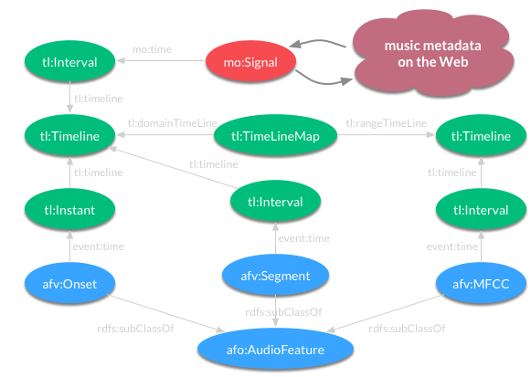

The Audio Feature Ontology is a Semantic Web ontology that is designed to serve a dual purpose:
- to represent computational workflows of audio features
- to provide a common structure for feature data formats using Open Linked Data principles and technologies.
In order to access the RDF representation of the ontology from a Web browser, the files are accessible in Notation 3 and RDF/XML. From other types of applications, the standard content negotiation guidelines are followed. Here is an example how to access the ontology in N3 syntax from the Python rdflib module:
Graph().parse("https://w3id.org/afo/onto/1.1#", format="n3")

The core model of the ontology retains original attributes to distinguish audio features by temporal characteristics and data density. It relies on the Event and Timeline ontologies to provide the primary structuring concepts for feature data representation. Temporal characteristics classify feature data either into instantaneous points in time - e.g. event onsets or tonal change moments - or events with known time duration. Data density attributes allow describing how a feature relates to the extent of an audio file: whether it is scattered and occurs irregularly over the course of the audio signal (for example, segmentation or onset features), or the feature is calculated at regular intervals and fixed duration (e.g. signal-like features with regular sampling rate). The above image illustrates how audio features are linked with terms in the Music Ontology and thereby other music-related metadata on the Web. Specific named audio feature entities, such as afv:Onset, afv:Segment, and afv:MFCC are subclasses of afo:AudioFeature, which, in turn, is a subclass of event:Event from the Event Ontology.
Representing instantaneous events on a signal timeline like onsets can be accomplished by linking the audio feature with the event:time property to a tl:Instant which can be placed on an audio signal timeline using the tl:at property. Audio features that have a duration over a segment of the signal can be represented as tl:Interval instances. Dense signal-like features such as Chromagrams or Mel Frequency Cepstral Coefficients (MFCC) can be mapped to the signal timeline by tl:TimelineMap objects. Here is an example in Turtle syntax showing Onset and MFCC features:
<file:///home/snd/moodplay/62400-14.01.mp3> a mo:AudioFile ;
mo:encodes :signal_f6261475 .
:signal_f6261475 a mo:Signal ;
mo:time [
a tl:Interval ;
tl:onTimeLine :timeline_aec1cb82
] .
:timeline_aec1cb82 a tl:Timeline .
:transform_onsets a vamp:Transform ;
vamp:plugin plugbase:qm-onsetdetector ;
vamp:output plugbase:qm-onsetdetector_output_onsets .
:transform_mfcc a vamp:Transform ;
vamp:plugin plugbase:qm-mfcc ;
vamp:output plugbase:qm-mfcc_output_coefficients .
:event_1 a afv:Onset ;
event:time [
a tl:Instant ;
tl:onTimeLine :timeline_aec1cb82 ;
tl:at "PT1.98S"^^xsd:duration ;
] ;
vamp:computed_by :transform_onsets .
:feature_1 a afv:MFCC ;
mo:time [
a tl:Interval ;
tl:onTimeLine :timeline_aec1cb82 ;
] ;
vamp:computed_by :transform_mfcc ;
af:value ( -26.9344 0.188319 0.106938 ..) .
Beyond representing audio feature data in research workflows, there are many other practical applications for the ontology framework. One of the test cases is providing data services for an adaptive music player that uses audio features to enrich user experience and enables novel ways to search or browse large music collections. Feature data of the music tracks available in the player is stored in a CouchDB instance in JSON-LD. The data is used by Semantic Web entities called Dynamic Music Objects (dymos) that control the audio mixing functionality of the player. Dymos make song selections and determine tempo alignment for cross-fading based on features. The following examples show JSON-LD representations of a track used in the system linked to feature annotations. The first example shows the document that stores metadata about a track.
{
"@context": {
"foaf": "http://xmlns.com/foaf/0.1/",
"afo": "https://w3id.org/afo/onto/1.1#",
"mo": "http://purl.org/ontology/mo/",
"dc": "http://purl.org/dc/elements/1.1/",
"tl": "http://purl.org/NET/c4dm/timeline.owl#",
"vamp": "http://purl.org/ontology/vamp/",
"afv": "https://w3id.org/afo/vocab/1.1#"
},
"@type": "mo:Track",
"@id": "baf169e8af365c243f08794c7e48b591",
"mo:available_as": "254087-16.01.wav",
"mo:artist": {
"foaf:name": "Dazz Band",
"@type": "mo:MusicArtist"
},
"mo:musicbrainz": "http://musicbrainz.org/recording/ee498e4d-1940-4268-8a23-c3992dfdedef",
"mo:musicbrainz_guid": "ee498e4d-1940-4268-8a23-c3992dfdedef",
"dc:title": "Let It Whip",
"release": { "@type": "mo:Release", "dc:title": "Soul Train Volume 2" },
"mo:encodes": {
"@type": "afo:Signal",
"@id": "ed1c11b3-5830-4b9e-a84f-2e60ddcb3ff4",
"mo:encoding": "WAV",
"mo:sampleRate": 44100,
"mo:time": {
"tl:timeline": {
"@id": "14e80f2a-4b6f-4c1f-8ff4-360b2990dd53",
"@type": "tl:Timeline"
},
"@type": "tl:Interval",
"tl:duration": "PT246.533333333S"
}
}
}
The track is linked to the feature data by assigning a GUID to the signal timeline, that features can be placed on.
{
"@context": {
"afo": "https://w3id.org/afo/onto/1.1#",
"mo": "http://purl.org/ontology/mo/",
"dc": "http://purl.org/dc/elements/1.1/",
"tl": "http://purl.org/NET/c4dm/timeline.owl#",
"vamp": "http://purl.org/ontology/vamp/",
"afv": "https://w3id.org/afo/vocab/1.1#"
},
"@type": "afv:Key",
"afo:input": { "@type": "mo:Signal", "@id": "ed1c11b3-5830-4b9e-a84f-2e60ddcb3ff4" },
"afo:computed_by": {
"vamp:block_size": 32768,
"vamp:sample_rate": 44100,
"afo:implemented_in": {
"@type": "afo:FeatureExtractor",
"afo:version": "1.3",
"dc:name": "Sonic Annotator"
},
"vamp:parameter_binding": [
{
"vamp:parameter": {
"vamp:identifier": "length"
},
"vamp:value": 10
},
{
"vamp:parameter": {
"vamp:identifier": "tuning"
},
"vamp:value": 440
}
],
"vamp:output": "http://vamp-plugins.org/rdf/plugins/qm-vamp-plugins#qm-keydetector_output_key",
"vamp:step_size": 32768,
"vamp:plugin": "http://vamp-plugins.org/rdf/plugins/qm-vamp-plugins#qm-keydetector",
"@type": "vamp:Transform",
"vamp:plugin_version": "4"
},
"afo:values": [
{
"afo:value": 19,
"tl:timeline": "14e80f2a-4b6f-4c1f-8ff4-360b2990dd53",
"tl:at": 0,
"@type": "tl:Instant",
"rdfs:label": "F# minor"
},
{
"afo:value": 2,
"tl:timeline": "14e80f2a-4b6f-4c1f-8ff4-360b2990dd53",
"tl:at": 2.229115646,
"@type": "tl:Instant",
"rdfs:label": "Db major"
},
{
"afo:value": 1,
"tl:timeline": "14e80f2a-4b6f-4c1f-8ff4-360b2990dd53",
"tl:at": 28.978503401,
"@type": "tl:Instant",
"rdfs:label": "C major"
},
{
"afo:value": 2,
"tl:timeline": "14e80f2a-4b6f-4c1f-8ff4-360b2990dd53",
"tl:at": 37.151927437,
"@type": "tl:Instant",
"rdfs:label": "Db major"
}
]
}
The ontology engineering process has produced example ontologies for existing tools including MIR Toolbox, Essentia, Marsyas:
The Audio Feature Ontology is being developed at the Centre for Digital Music, Queen Mary University of London
as part of the Fusing Audio and Semantic Technologies (FAST) project.
Contact: Alo Allik
The source code is available here: https://code.soundsoftware.ac.uk/projects/af-ontology.
WebVOWL visualisation of the ontology: Audio Feature Ontology.

- @prefix xml: <http://www.w3.org/XML/1998/namespace> .
- @prefix owl: <http://www.w3.org/2002/07/owl#> .
- @prefix afo: <https://w3id.org/afo/onto/1.1#> .
- @prefix co: <http://purl.org/co/> .
- @prefix bibo: <http://purl.org/ontology/bibo/> .
- @prefix rdfs: <http://www.w3.org/2000/01/rdf-schema#> .
- @prefix prov: <http://www.w3.org/ns/prov#> .
- @prefix mo: <http://purl.org/ontology/mo/> .
- @prefix dc: <http://purl.org/dc/elements/1.1/> .
- @prefix qudt: <http://qudt.org/1.1/schema/qudt#> .
- @prefix rdf: <http://www.w3.org/1999/02/22-rdf-syntax-ns#> .
- @prefix tl: <http://purl.org/NET/c4dm/timeline.#> .
- @prefix xsd: <http://www.w3.org/2001/XMLSchema#> .
- @prefix time: <http://www.w3.org/2006/time#> .
- @prefix dcterms: <http://purl.org/dc/terms/> .
- @prefix event: <http://purl.org/NET/c4dm/event.#> .
- @prefix unit: <http://qudt.org/1.1/vocab/unit#> .
- afo:Aggregation: Abstract class Aggregation represents a computational operation in audio feature extraction computational workflow
- afo:AudioFeature: Represents abstract conceptualisation of an audio feature
Properties: afo:collection, afo:computed_by, afo:described_in, afo:dimensions, afo:feature, afo:model, afo:sequence, afo:value, afo:value, afo:value, afo:value, afo:value, afo:value, afo:values - afo:Context: Represents the software and hardware context of a feature extractor instance
Properties: afo:agent - afo:FeatureExtractor: Represents a specific implementation of an audio feature
Properties: afo:implementation_of, afo:implemented_in, afo:implements - afo:Filter: Abstract class Filter represents a computational operation in audio feature extraction computational workflow
- afo:FirstOperation: First computational operation in a feature extraction sequence of operations
- afo:Identifier: Represents any kind of identifier, e.g. Musicbrainz, Spotify, Dbpedia, etc.
Properties: afo:origin, afo:type, afo:value, afo:value, afo:value, afo:value, afo:value, afo:value - afo:LastOperation: Last computational operation in a feature extraction sequence of operations
- afo:Model: Represents an abstract model of an audio feature
Properties: afo:implementation, afo:model_of - afo:Operation: Represents a computational operation in the feature extraction workflow
Properties: afo:next_operation, afo:operation, afo:output, afo:parameter - afo:OperationSequence: Represents a sequence of mathematical operations
Properties: afo:first_operation - afo:OptionalOperation: Optional computational operation in a feature extraction sequence of operations
- afo:Point: Represents a feature at an instant of time
- afo:Segment: Represents a feature spanning an interval of time
- afo:Transformation: Abstract class Transformation represents a computational operation in audio feature extraction computational workflow
- afo:agent: links an operating system description to context
Domain: afo:Context
Range: prov:SoftwareAgent - afo:collection: links a collection of values using terms defined in the Collection Ontology
Domain: afo:AudioFeature
Range: co:Collection - afo:computed_by: links an audio feature to a feature extractor
Domain: afo:AudioFeature
Range: afo:FeatureExtractor - afo:context: links an audio feature extractor to a system context
Domain: afo:Instance
Range: afo:Context - afo:described_in: links model to an external resource that describes it
Domain: afo:AudioFeature
Range: bibo:Document - afo:dimensions: links dimensions of a feature to feature extraction result
Domain: afo:AudioFeature
Range: rdf:List - afo:implementation: links an audio feature to an implementation
Domain: afo:Model
Range: afo:FeatureExtractor - afo:implementation_of: inverse of implementation to link an implemented algorithm to a computational model
Domain: afo:FeatureExtractor
Range: afo:Model - afo:implemented_in: links a feature extractor to a SoftwareAgent
Domain: afo:FeatureExtractor
Range: prov:SoftwareAgent - afo:implements: links an audio feature extractor to an audio feature
Domain: afo:FeatureExtractor
Range: afo:AudioFeature - afo:model_of: inverse of model to link a computational model to an audio feature
Domain: afo:Model
Range: afo:AudioFeature - afo:origin: identifier origin, e.g. MusicBrainz, 7digital, Spotify, etc.
Domain: afo:Identifier
Range: xsd:string - afo:output: links an abstract output type to a computational operation
Domain: afo:Operation
Range: afo:AudioFeature - afo:sequence: links a model to computational sequence
Domain: afo:AudioFeature
Range: afo:OperationSequence - afo:value: links a feature value to an audio feature
Domain: afo:AudioFeature
Range: xsd:anySimpleType - afo:values: links a collection of values to an audio feature
Domain: afo:AudioFeature
Range: rdf:Collection
- afo:confidence
Type: owl:DatatypePropertyafo:data_type
Type: owl:DatatypePropertyafo:default_value
Type: owl:DatatypePropertyafo:description
Type: owl:DatatypePropertyafo:maximum_value
Type: owl:DatatypePropertyafo:minimum_value
Type: owl:DatatypeProperty